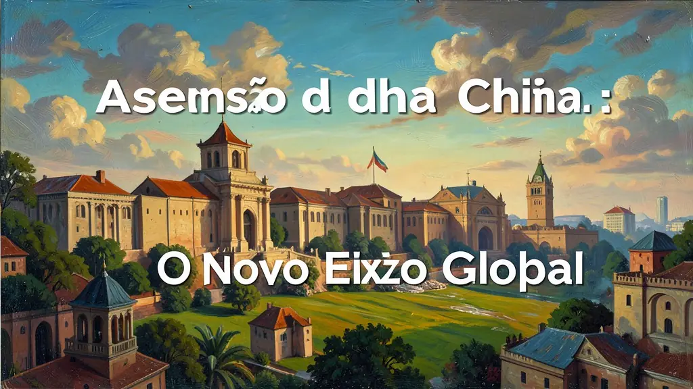
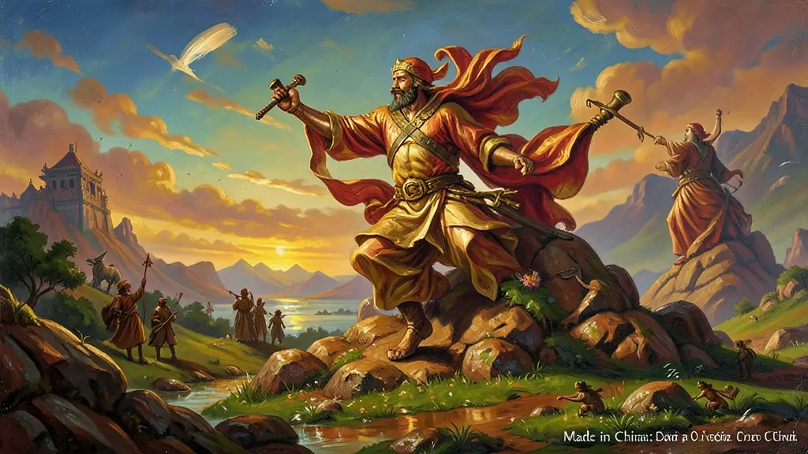
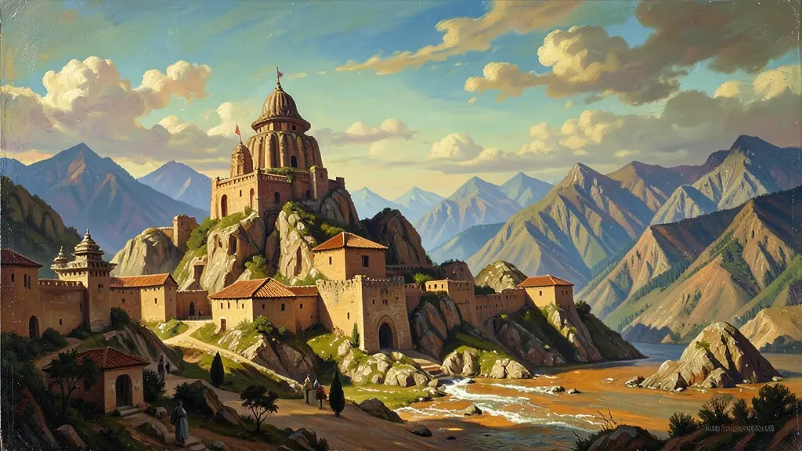

Capítulo 01
1. Deng Xiaoping: O Gato que Caça Ratos
Mao Zedong fez a revolução comunista, mas Deng Xiaoping fez a revolução econômica. Ele disse: 'Enriquecer é glorioso'. Ele permitiu que os chineses tivessem empresas privadas e que estrangeiros montassem fábricas em solo chinês. Foi o maior experimento econômico da história: manter o partido no poder enquanto o capitalismo transformava o país. Em poucos anos, a China tirou 800 milhões de pessoas da miséria absoluta.

Capítulo 02
2. Made in China: Da Cópia para a Criação
Antigamente, 'Made in China' era sinônimo de brinquedo que quebra ou réplica barata. Hoje, China é sinônimo de Huawei, BYD e Lenovo. O governo investiu pesado em educação e pesquisa e desenvolvimento (P&D). Eles não querem mais apenas costurar tênis Nike, querem criar os celulares mais potentes do mundo. A China passou da fase de 'copiar' para a fase de 'superar' o Ocidente em tecnologia digital.

Capítulo 03
3. Nova Rota da Seda: O Império da Infraestrutura
O projeto Belt and Road é o plano chinês de espalhar estradas, portos e ferrovias por 70 países. Ao financiar pontes na África e trens na Europa, a China compra influência diplomática e garante que todos os caminhos do comércio levem a Pequim. Os críticos dizem que isso é a 'Diplomacia da Dívida', onde países pobres ficam devendo bilhões à China e acabam perdendo a soberania de seus próprios portos.

Capítulo 04
4. Guerra Comercial: China vs EUA
Os EUA perceberam que a China não seria apenas uma aliada, mas uma rival. Começou a guerra das tarifas: Trump e Biden tentaram barrar produtos chineses para proteger os empregos americanos. O centro da briga é o 5G: quem controlar o sinal da internet do futuro controlará os dados do planeta. Essa 'Nova Guerra Fria' é diferente da antiga porque os dois países são sócios econômicos; eles brigam, mas não podem viver um sem o outro.
Capítulo 05
5. Brasil e China: O Sócio de Ferro e Soja
O Brasil é hoje um dos parceiros mais importantes da China fora da Ásia. Quase tudo o que a China come (soja e carne) e o que usa para fazer aço (minério de ferro) vem do nosso país. Isso traz muito dinheiro para o agronegócio brasileiro, mas também nos torna dependentes. Se a China parar de crescer, a economia brasileira entra em crise. Somos a fazenda que alimenta o operário chinês que fabrica o nosso celular.
A transformação da República Popular da China, nas últimas quatro décadas, em potência geoeconômica de vanguarda configura a reconfiguração mais significativa na ordem geopolítica contemporânea. O ponto de virada histórico deve-se, indiscutivelmente, à liderança pragmática de Deng Xiaoping e seu plano das 'Quatro Modernizações' implementadas após 1978. Como adverte Fareed Zakaria, tratou-se fundamentalmente da formulação do 'socialismo com características chinesas': a adoção radical e massiva da economia de mercado guiada sob o punho totalitário e planificador da burocracia do Partido Comunista.
As Zonas Econômicas Especiais (ZEEs) estabeleceram-se como âncoras da economia política sino-asiática, conjugando fornecimento hiperabundante de força de trabalho precarizada, ausência de greves sindicalistas e massiva sucção de capital/know-how estrangeiro. Tal fórmula de 'abertura econômica e fechamento político' cristalizou-se em 1989, no fatídico episódio da Praça da Paz Celestial (Tiananmen), demarcando nitidamente as balizas de atuação política admitidas pela intelligentsia de Pequim: a libertação comercial jamais representaria democratização do sistema partidário.
O domínio contemporâneo e o Exame do Enem abordam a inserção chinesa como motor nevrálgico do capital asiático. As políticas de infraestrutura como a 'Iniciativa Cinturão e Rota' (Nova Rota da Seda), a entrada avassaladora do gigante asiático como império adquirente de commodities latino-americanas no século XXI (especialmente no Brasil) e o embate geoestratégico de hegemonia bélica e de semicondutores (Big Techs e 5G) contra a prevalência dos Estados Unidos são as tônicas dessa profunda metamorfose.
Fonte: KISSINGER, Henry. Sobre a China. Rio de Janeiro: Objetiva, 2011.
Atividades interativas
Questões para fixar
O modelo econômico instituído na China por Deng Xiaoping a partir de 1978 ficou conhecido como:
Qual o principal objetivo estratégico do projeto chinês contemporâneo chamado 'Belt and Road' (Nova Rota da Seda)?
Qual foi o principal objetivo das reformas econômicas implementadas por Deng Xiaoping na China em 1978?
Qual é o nome do projeto de infraestrutura lançado pela China no século XXI, que visa conectar a China à Europa e África por terra e mar?
Qual é o setor em que a China se tornou líder em tecnologia de ponta no século XXI?